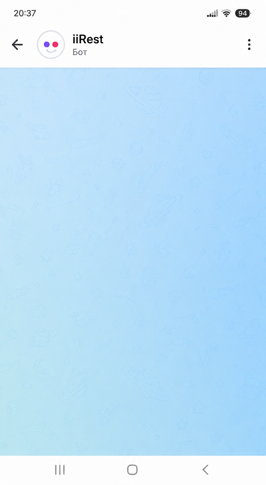

Выручка
«Какая была вчера выручка?»
148 760 ₽ по iiko: −18% к средней среде. Чеков 214, средний чек 695 ₽, гости 187. Источник: iiko → Продажи по часам.
Пишите ему как управляющему: что проверить перед сменой, почему просела выручка, где выросла закупочная цена. В ответ он дает короткую сводку по данным ресторана: цифры, причина и следующий шаг.

Вопрос можно писать простыми словами. Ассистент отвечает коротко: что произошло, почему это важно и что сделать дальше.
«Какая была вчера выручка?»
148 760 ₽ по iiko: −18% к средней среде. Чеков 214, средний чек 695 ₽, гости 187. Источник: iiko → Продажи по часам.
«В чем проблема, почему просели?»
Основной минус в 18:00-21:00: −28 900 ₽, гостей −31, конверсия доставки −12%. Источник: iiko → Продажи, смены, доставка.
«Где переплачиваем?»
Моцарелла +46 ₽/кг, сливки +18 ₽/л, томаты +27 ₽/кг. Потенциал экономии 18 400 ₽/мес. Источник: iiko → Накладные и цены.
«Напомни про молочку»
Готово. Завтра в 10:00 напомню проверить молочку, лимит отклонения поставлю +5%. Каждую пятницу пришлю сводку из iiko → Закупки.
«Слабый вторник. Что сделать?»
Не снижайте цену на все меню. Соберите комбо из маржинальных блюд на вечерний слот: маржа 67%, чек +280-340 ₽. Источник: iiko → ABC меню.
«Что требует внимания?»
Три сигнала из iiko: вечер −28 900 ₽, молочка +18 400 ₽/мес, овощи +7 300 ₽ списаний. Быстрый эффект даст проверка смены и закупки.
Ассистент соединяет данные ресторана, память о контексте и агентские сценарии: отвечает, проверяет, напоминает и помогает думать.
Если у вас другая учетная система, настроим подключение под ваши данные: через API, регулярные выгрузки или доступный формат обмена.
Видит продажи, меню, закупки, остатки, смены, поставщиков и историю вопросов из вашей системы.
Можно спросить с телефона, когда нет компьютера, доступа к учетной системе или времени разбираться.
Подсвечивает рост цен, странные списания, слабые смены, просадку среднего чека и расхождения.
Объясняет причину и предлагает следующий шаг: что проверить, кому написать, какую гипотезу протестировать.
По просьбе ставит напоминания, делает утренние сводки и запускает регулярные проверки.
С ним можно брейнштормить акции, креативы, меню, исследования гостей и управленческие решения.
Начать можно с нескольких сценариев, а затем расширять ассистента под процессы ресторана.
Управляющий пишет в MAX и получает ответ по данным, не заходя в учетную систему.
Выручка, гости, средний чек, закупки, остатки и отклонения коротким сообщением.
Рост цен, переплата, поставщики для проверки и аргументы для переговоров.
Ассистент ищет, где упали гости, чек, маржа или поток в конкретный слот.
Идеи акций, комбо, постов, рассылок и гипотез на основе меню, спроса и маржи.
Напоминания, еженедельные отчеты, проверки поставщиков и списки того, что нужно проконтролировать.
Ассистент ускоряет анализ и подготовку решений, но не забирает управленческую ответственность.
На старте ассистент читает данные, отвечает и предлагает действия, но не меняет учетную систему.
Доступы настраиваются по ролям и источникам данных.
Ответы и рекомендации можно сверить с цифрами, источниками и правилами ресторана.
Выберем 5-10 вопросов, подключим iiko, rkeeper, Saby Presto или вашу систему и проверим ответы, сводки, напоминания и регулярные задачи.